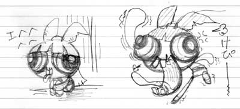

(日記とか言うモノ)
うん、やはり人間余裕が大切だ。なんか昨日と似たような始まりだが、まあいいか。
planetcomics.jpのトップが変なデータベースになったり、パワパフサーチエンジンが消滅したり、パワパフサイトは大丈夫なんだろうか。まあ、パワパフそのものはCNでもガンガンやってるし、グッズもどばどば出てるから消えてなくなることはないんだろうけど、キャラだけが残ってもな〜。
キャラクターは確かにすばらしいんだが、その背景に物語がなければ意味がない。それこそほんとに「カワイイ」だけになってしまってはダメなんだよ。むしろそれこそパワパフじゃない。そのへん、日本のグッズは「カワイイ」に焦点を絞りすぎだ。
そんなわけで、グッズはもっとバリエーション豊かに存在するべきである。。例えば・・・
脳味噌半分出てるメタボロモジョとか、市長が持っていたようなメイジャーマン人形とか。
変に湿っていて、いつのまにか空気が抜けていく、ダメダメなアメーバーボーイズクッションとか。
「10円くれ。ゴルァ」と脅すバターカップ貯金箱とか。どんどん臭くなってゆくバターカップ人形とか。
髪の毛がまとわりつく、セデューサ抱きマクラとか。
どんどん壊れてゆくミニストリーオブペイン人形3体セットとか。
手に取ると暴れ出すファジーぬいぐるみとか。
だ、だめすぎる・・・・・・・・
やっぱり人間寝ないとおかしくなります。連続徹夜はやっぱりキツイですね。
はあ。アホかオレは。
眠りというのは軽い死だと言ったのは誰だったか。 夢はあの世の残視。
寝れないということは、死ねないというかとか。ウルヴァリンの気持ちがようやくわかったような気がしました。いつのまにヒーリングファクターを備えてしまっていたのか。アダマンチウムを埋め込んだのは誰だ。ここだ、このこめかみのところに埋まってるんだ。
いけない、また変なことを書きそうだ。こんなときは「キャンディ大好き」でも見よう。英語音声で。
BBBUBBLLLLLLLLLLLLEES
モジョがボコられてる。もっとだ、もっとやれ、もっとやれ、やれ、やれ、や、やめろぉぉぉぉぉぉ〜。あれはオレだ！おろろ〜ん。モジョはオレだ。オレはモジョだ。オレは小ずるい猿だ。なにやってもいつもギッタギタに潰されるんだ。でもモジョはボロボロになっても次にはまるでなかったのように元気に復活する。そうだモジョになろう、なろうなろう明日なろう。立派なモジョに明日なろう。
オレの時間を盗むヤツは誰だっ！
おまえかっ！それともおまえかっ！ ちくしょ〜、あれだけやったのに全部無駄かよ〜、時間を返せ〜。
くそう、まったりとしたあの至福の自分時間はいったいいつ来るというのだぁ。うおうお、この行き場のない怒りをどこにぶつけたものか。ちきしょう、こうなったら2chでもいって荒らしてくるか。sage進行しているやつをageてやるっ！
しかし、今の私の脳は「スカポン太」脳になっているので、頭の中にブロッサム様がいらっしゃるのです。
「だめよっ。ちゃんとルールとマナーを守ってしなきゃ」
「はいっ。ブロッサム様。」
でも同時にバターカップ様もいらっしゃるのです。
「いけいけ！そんなときはおもいっきり暴れなくっちゃ！」
「はいっ。バターカップ様」
・・・・いや違う、バターカップ様がそんなこと言うわけはない。はっ！これはカレだな！カレ蝶が脳下垂体に寄生しているに違いないのであります。よし、そんなもの、こうやって耳かきで鼻から掻き出してやる。ぐりぐりぐりぐりぐりぐりぐりぐりぐりぐりぐりぐり。げふっ。鼻から赤いものが。赤。やっぱりカレだったんだ。わーいわーい。オレは助かったんだ。
こんなときはあの方のサイトの日記を読んで癒されにいこう。はふー。はああ、やっぱりいいです。惚れてしましそうです。それに比べてオレのいかに腐ってることか。汚れていることか。毒だ、毒が染みついている。いやアメーバーか。ダメだダメになる。いそいで洗い落とさねば。洗濯機はどこだ。あった。ダメだ。回らない。フタを閉めなければ回らない。フタをしめれば中からはボタンが押せない。そうだ自分でまわればいいんだぐるぐるぐるぐるぐるぐるぐるぐるぐるぐるぐるぐるぐるぐるぐるぐるぐるぐるぐるぐるぐるぐるぐるぐるぐるぐるぐる気持ち悪くて吐いたこれがどくなのですねぶろっさむさまわたしはきれいなにんげんになれたのでしょうかまだたりませんかわたしそのものがどくなのですかきえてなくなるどくわたしどくわたし
CNではパワーパフガールズの「パワーパフがいっぱい」をやっていた。
やっぱ、つらい話だなあ。一応ハッピーエンド風にまとめてるけど、ハッピーエンドに見えないよ。この話、非常に印象深いんだけど、評価しずらい作品ですねえ。
単純に「この話、好きか？」と問われたら「好き」と言えないつらさがある。エピソードとして「おもしろい」「よくできている」などと思えても、物語として「好きか」となると、「好き」と言えないうしろめたさがあるんじゃなかろうか。まあ、誤解を恐れずに言えば、私この話「好き」です。つらいんだけどね。
いつものように、ガールズがカワイらしけれカワイらしいほど、ギャグが盛り込まれていればいるほど、つらい。TVショウのとこなんぞ、それこそ人身売買のようで笑えない。レニーの話みたいのだと、それこそ「あっはっは」とすませられるんですが、ねえ。この違いは何かと言えば・・・そう、オレはパワーパフガールズエクストリームに激しく感情移入しているからだ！
微妙にスペルが違うエクストリームたち（GirlsがGirlzになってた）。最後の方の粗悪品の彼女たちは、ここまでやるかってくらいのメチャクチャさ。ユートニウムもビックリ。でもねえ、そんな彼女たちもかわいく感じるんですよ。ビメイダーとしての悲哀性、アンドロイド的な虚無感、不完全ゆえの美しさ。彼女たちは考える時間も寿命もなかったけれど。
ガールズは幸いにして偶然生まれたにしては失敗しなかったけど、今のパワーパフガールズが生まれる前にユートニウムが「理想の女の子」を作る実験を何度も繰り返していて、その過程で失敗作ともいうべきパワーパフガールズが沢山生まれていたとしたら、どうだったのだろうか。それらも「できそこないの失敗作」なんだろうか？
なんか、人工生命を作ろうとして苦悩する「火の鳥 未来編」みたくなってきたなあ。ユートニウムは猿田博士か？
商業主義によるグッズの乱売に対するアンチテーゼなんて読み方はヤボだ。純粋に物語と向き合って見るべきだ。制作者の意図がどうあれ、「エクストリーム、かわいい。萌え〜」とオレは言う。そのほうが彼女たちも救われる。彼女たちがいたことをオレは忘れない。覚えていよう、パワーパフガールズといっしょに。
あー、なにきどってんだか、なあオレ。ホントは笑い飛ばしたいんだけどね。
ただ、 パワパフのエピソードとしては他に類をみない異色作だとおもいますよ。なにしろ、直接的ではないにしろ、悪役は死んだだろうから。どんなことをしても刑務所（留置場か？）に入るだけのお気楽カートゥーンの世界で、破滅死ですから。エクストリームだって、作品では「製品が壊れた」といった表現してるけど、「死んだ」んだものね。やっぱり最後は破滅死だし。うわ、きっつ〜。
まあ、しかしだ、それでもエクストリームたちはディック博士のことを好きだったんだと思いますよ。
久々の休日休みってことで、今までの肉体的精神的疲れがどっとでたのか、土曜は完全ふぬけ状態。
ぼけー。 どうにも積極的状態にまでもちあげることができず、放心してました。意外にこれがここちよい。サイトの更新を予定してたけど、まあ今度にすっか。明日できることは今日しない。これだね。ダメなやつですんまそん。
それはともかく、某所でお絵かきチャットってやつ初体験したんだけど、けっこう楽しいね。一枚のボードに複数がリアルタイムで書き込むの。お絵かきだけに、通常のチャットより時間がたつのがはやくてねえ。いつもは下準備してお絵かきするけど、リアルタイムだからそんなことも出来ず、ノリだけで描いてゆく。他の人と画力の差が歴然としていて内心ちょっとへこんだけど、まあ楽しかったからいいか。
記憶だけで描いた、ブギーマンとかセデューサとかビッグベンとか博士とか、けっこうぐちゃぐちゃでした。顔のあたりはまだいいんですが、下半身とかはかなり記憶があいまいなのに気が付く。やっぱりガールズは何度も描いてるから描きやすいや。
それで気が付いたんですが、どーも私は単なる一枚絵ってのは描けないのかもしれないってこと。どうしても、シチュエーションこみになっちゃうんだよね。他の人の絵につっこみいれるような絵ばっかり。人の絵の上に、博士のヘリコプタがぶーんと飛んでんの描いたり、脇でちっこくアメーバがボケかましてたり。まさに落書き。描いてる途中にへんな落書きしてどうもすんませんでした。
持ち帰り仕事なんかしとるわけなんですが、だめだね。
なにしろ、家でPCに向かうと人格が「スカポン太」に切り替わるものだから、全然仕事する気になりません。仕事脳に切り替えるのが大変です。モチベーションもまったく上がらないし、能率も半減。やんなきゃ、やんなきゃ、と思いながらも、気分転換にガールズのコミック読み返したり。しかも気分転換のほうが作業時間より長かったりする罠。
教訓：仕事は家でするもんじゃない。
今はやりのSOHOとかで在宅で仕事している人も多いんだとか聞きますが、よくやれるよなあ。
って、オレは今なにやってるんだよー。仕事しろよオレ。
早く週末こないかな。でないとろくに更新もできやしない。
それにしてもカートゥーンカートゥーンショウつまんねえ〜。どーしても作品に出来不出来があるのがいなめない。あーあ。
とか思ってたんですが！なんとグリム＆エビルが！！！！やほーい！（正確にはグリムのほうだけなんだけどさ）
うーん、やっぱマンディいいわ〜。強い。 鼻デカのガキはいらね〜。
やっぱりグリムもここ出身でしたか。しょーもないものいっぱい混じってるカートゥーンカートゥーンショウですが、やっぱ見逃せねえなあ。
し か し だ。のらくろクンはねーだろカートゥーンネットワークよお。そんなもの放送枠に入れるくらいなら、タートルズとか、ガジェット警部とかもっといろいろあるだろ。このさい、ムッシュバラバラでもいーよ。なあ。日本のアニメ（しかも安く買ったようなしょーもないの）なんかやんなくていーんだよ、あんたは。やるなら宇宙船サジタリウスとかやってくれよ。キャラ人間じゃないしカートゥーンみたいなものだろ。なあ、番組編成もちっと考えろよや。なあ、なあ、なあ。
そーいや、海外じゃFuturama買ったみたいなんで、日本でもやってくんないかな。
おかえり！オレ！
今年（というか今月というか）に入って二度目の徹夜。きつー。
で、そうやって留守してる時にかぎって、なんだかわけわからんものが来るし。世の中そんなものかも。これが昨日の夜だったらブチきれてるかもしれんが、今は一回りしたのか妙に平静な気分。なんだかビデオもたまってるなあ。とりあえず、今日はもう寝よう。その前に溜まったメールの処理をしなけりゃ。
うーん、しかし、アドレス6つってのは多すぎかも。メールニュースも少し整理したほうがいいなあ。あー広告メールうざいっ。
最近、なんかお絵かきづいてます。
コミックだと、やっぱ商業誌つうかプロの仕事って感じで、そうでもなかったんだけど、ファンコミックやファンアートなんかだと、なんだか近い感じがして刺激をうけます。けっこう面白いの描いてるんだよねえ。みんな。
そんなわけであちこちに出没しては絵なんぞ描いたり。慣れないもんでえらく時間がかかるんですが、それなりに楽しい。これだけでもこんなに時間がかかるのに、みんな、よくマンガなんぞ描けるなあなんて感心したりもしてます。
マンガかあ、私にも描けるだろうか・・・？
てなわけで、ちょっと考えてみた。
レン＆スティンビーに今ハマリぎみなんで、特におもしろかった「Ren Need Help」をモトネタに、レンをブロッサムに置き換えた「Blossom Need Help」なんて考えてみた。ブロッサムがノイローゼになって精神病院へいく話・・・・ええっと・・・と、ちょっとスケッチをしてみる。（マンガの描き方なんか知らんからかなりいいかげん）
それがこのスケッチ・・・・・・

ダメだ！こんなのやったら刺客が来る！
今、CNでカートゥーンカートゥーンショウをやっとるんですわ。
これはマンガで言うなら新人賞みたいなもので、若手カートゥーン作家の作品がいっぱい見れるんですわ。といっても、これは過去の再放送だけど。今はもうやってないのかな。そこで、人気があったやつはレギュラー化したりするんですね。その代表的なものが言わずとしれた、わたしのわれらの「パワーパフガールズ」ですわ。
まだ始まったばかりなんでわかりませんが、そのうちプロト版パワパフもやるかな〜。
で、見てみると、パワパフじゃなかったんですが、マクラッケンさん他にも作品作ってて、ドラキュラと女の子の話なんですが、これがまた女の子（7歳）がかわいくてねえ。やっぱりこの人・・・・
さて、このカートゥーンカートゥーンショウなんですが、その当時スペースゴーストのトーク番組「Space Ghost Coast to Coast」（日本未放映）でも取り上げられてまして、その優秀作（かどうか実はよくわからんのだが）をゴーストはじめゴーストの悪役どもが採点する（採点基準はむちゃくちゃ）てな話でした。ゴーストもかなりデタラメにつっこんでいて笑えるんですが、そこで優勝したのがプロト版ガールズ（ミートガンの話）。それに浮かれたマクラケンが水着姿を披露するというアホなノリもあったんですが、まあそれはさておき。
これを見ていて「お」と思ったのが「ジョニーブラボー」のプロト版。ノリはいっしょだったんだけど、「シュタッ」「ビシッ」といってキメポーズの擬音がまだないんですね。いや、そんだけなんだけど・・・
カートゥーンカートゥーンショウ、ゴーストのそれと同じモノかはわからんのですが、見続けてると意外な発見があるかも。とりあえす、スタッフリストには注意しとこう。
あ、今気が付いたのだが、カウンターが3万超えてる。昔やってたサイトじゃ1万越すのに2年かかったというのに・・・パワパフの力はすごいなあ。といっても、前のやつはBBSもなかったし、途中から放置状態だったからなあ。そのわりには更新しないプレッシャーてのも人並みにあって、あれは不思議なものだ。
内容うんぬんはとりあえず置いといて、BBSがあるのと無いとじゃそれなりに違うんじゃないかと思うところ少しあり。そーでもないか。やっぱ更新スピードの違いもあるのかな。いやいや、やっぱりパワパフの知名度も大きいか。そうではなく、訪問者の質にもよるのかなあ。・・・・・結局わからんということか。
しかし、「カウンターも1万超えるとどーでもよくなってゆく」というのは誰の言葉だったか。まあ、それもどうでもいい話。とりあえず、熱意が持続するかどうかだけの話。私はパワパフ地上波放映終了後にハマった（というか知った）という遅いハマリ具合だったので、持続も長いだけかもしれない。まあ、まだ1年もたってないので偉そうに言えるほどのハマリ具合でもないんだが。
自問自答、自己提案自己否定でぐるぐるまわる。まあたまにはいいか。＜っていつもこんな具合じゃん。
まだ回ってるよ〜
最近知ったんですが、あの「幻の湖」がDVD化されるんですと！
私、見たことないんですが、とある方面では激しく有名な作品。
『シベリア超特急』ですら裸足で逃げ出し、『殺しの烙印』がいかにまともな作品だったのかわかるような・・・そんな超豪華で超駄作な伝説の映画。
これ作った橋本忍って人はある程度映画に詳しい人ならだれでも知ってる超有名な脚本家。（八つ墓村とか八甲田山とか砂の器とか日本沈没とかの脚本）
それが自らメガホンをとり、東宝創立50周年記念作品として役者も豪華に、日本映画至高の傑作となる、はずだったんですが・・・・・まあ後は言わんでもわかるかと。映画はあっという間に打ち切り、橋本忍自信もこれがきっかけで映画界から遠ざかることになったという結果だけをみても、いかにそのボロボロぶりがわかるというもの。
しかし、その狂いっぷりが逆に（極々一部で）カルト扱いされてる作品。
まあ、見たことないので本当のとこはわからんのですが。なにしろ、ストーリー紹介を読んでもなにがどうなってるんだかさっぱりイメージできないんですね、これが。
とまあ、そういった噂だけ耳にはいってるんで、一度は見てみたいなあなどと思っていたんですが、 DVDですか。何をかんがえてるんですかねえ。とりあえずその前に
DVD化するべきものがいっぱいあるような気がするんですが、むしろこういうヤツのほうが今の時代売れるとおもったんでしょうなあ。
でもって、そんな作品なんで、ごく一部で大喜びしてるんじゃないかなあと、web徘徊してみたら案の定、ごく一部で盛り上がってました（笑）
そんなわけで気になる方は「幻の湖」「橋本忍」で検索してみると良いかと。見てないやつの聞きかじりの与太話よか、よっぽどいい。
とりあえずココでもいいね。
CinemaScape「幻の湖」
話はそれるが、このサイトはお気に入り。使い勝手がよく、意見がバラバラなのがまたいい。レビューというのはこうあるべきだ。
てなわけで、カートゥーンのこういうサイトないかなあ。がんばって投稿しますから、ねえ、だれか作ってよ。（そもそも語れるほど見てはいないのだが・・・だからガンバルっていってるじゃん）
パワパフだけでもいいけどね。あちこちに散らばってるレビューをまとめて読めるようなやつ。なるべく意見がバラバラなのが理想。「犬作戦リベンジ、これ最高傑作！」とかいうムチャなやつとか読みたいね。声かけてくれたら大喜びで協力しますよ。
今日、渋谷マークシティで待ち合わせ。しかし、先方から1時間ほど遅れるとの連絡があり、ヒマに。
さて、どこで時間つぶそうかと思ってたんですが・・・この場所ってたしか・・・・
そーだよ、m.i.x! があるんじゃなかったけか！？
キャラショップってのは行ったことはなかったので、これも運命の導きかということでよってみることにした。
こじんまりとした店でしたが、パワパフグッズもいっぱいありますな。噂の「ちゃりんこガールズ」とか「着せ替えガールズ」とか初めて実物見ました。ガールズがちゃりんこ乗ってる意味がさっぱりわからんのですが、「着せ替えガールズ」はやっぱりヤバイかもしんない。だって、あのスパッツを脱がせたり履かせたりするんですよ！おいおい！レニー君には渡したくないなあ。パジャマまで脱がせることができるのかまではわかりませんでした。ていうか、若い女の子に囲まれるなかで、手にとって上から下から眺めたり、服を脱がせられるかどうかをチェックするなんて、できるはずがないじゃないですか！！！
ところで、これれの日本製パワパフグッズを見て思ったことなんですが。
いつものアメコミショップでアチラのグッズを眺めているときと、なんか微妙に雰囲気が違うんですね。この違和感はなんだろうと思っていたんですが、わかりました。
日本のパワパフグッズは・・・・バターカップが怒ってない！！！
まあ、よーく見ればないこともないんですが、なんか圧倒的にUSトイと比べると少ないような・・やっぱかわいい大国日本ってとこでしょうか。
せっかくだから、ラブリーエッグを3つほど買ってみました。
中身は・・・フェイスマグネット・ブロッサム、ビーズ・バブルス、フィギュア・バターカップ。見事に三人タイプは違うけど揃いましたな。ちぇっプリンセスには当たらなかったか。
フェイスマグネット・ブロッサム：なんてことないんですが、実用品としても使えるのはグッド。やっぱブロいい
ビーズ・バブルス：顔だけなんでなんか変な感じ。黄色い頭巾を被ってるみたいだ。ぴゅんぴゅん丸みたい。
フィギュア・バターカップ：ドリンクをもってるバターカップ。ってあれ？これリストにないじゃん。はっ！もしかしてこれがシークレットってやつか。でもなんかコレおかしいぞ。生足じゃん。
あ、これ水着なんだ！ 水着ガールズ！！！さすがシークレット！やるな。（笑）
ちょっとづつですが、ガールズグッズも増えてきました。
ちょっと間があいたかな。日記サイトってわけじゃないんで、どうしても日記の優先順位は低くなってしまいますなあ。
お気に入りのサイト巡りはもとよりメール読んだりするのって、あながちバカにできないくらい時間がかかっちゃったりするものです。またメールやなんやらの返事ってのもけっこう時間かかるんだよねえ。いざできあがってみれば大した分量じゃないメールでも、いろいろと言葉選んだり、うまく表現できなかったりと、意外に時間がかかる。そんなことありませんか？
まあ、速い人は速いんだけど、私はなかなかそうもいかなくて。てなわけで、メールとかBBSのカキコにしても、うまく言葉にできなかったその人の想いなんてのも読みとりたいと、ついつい何回も読んじゃう。時間かかりすぎ。人によって様々なのにね。
実際に喋ったり、また沢山書いたからといって、想いがすべて伝わるなんてことはないし、必ずしも情報量が多いことが伝達の助けになるわけでもない。かといって、少ない言葉でうまく凝縮して伝えるなんてのもなかなかできることじゃない。いろいろ感銘をうけたりしたものって、それだけの感動の分量と同じくらい言葉を使いたくなる。おもしろい。すばらしい。ただそれだけじゃないはずなのに、それしか言葉にならない時など、もどかしい。
絵とちがってわかりにくいけど、文筆のプロでなくとも言葉の表現力が高い人はいるもので、感心してしまいます。ただ、それがどううまいのか、表現できないところが・・・・なやましいですね。
アメコミと言えば、スーパーチャンネルでやってる実写ドラマ版ワンダーウーマンのオープニングはいいねえ。
とか言ってると、このワンダーウーマンも実写映画化ですよ。よく見ると、スーパーマンどころかキャットウーマンまで！
他にもハルクやファンタスティック・フォー、ヘルボーイも映画化みたいだし、あのジョニーブラボーも実写映画化。スクービードゥははやくも2だし。そーいや、ドラゴンボールやキャプテンハーロックも実写映画化でしたっけ。ハリウッドはどうなっちゃったんですか？
ヤボなことはもう言わない。ここまで来たら、もう何でもかんでも実写映画化してください！メチャマイナーなものとか。マッドマンとか。兎用心棒とか（笑）
ノミネートされてるスーパマン競争なんですが、これなんでか知らないけどCN放映版では「スーパーマン戦争」なんだよね。なんで？
これに出てくるメイジャーグローリー（グローリー少佐）の元出演作はデクスターラボの「ジャスティスフレンズ」なんだけど、おもしろいなあこれ。なんちゅうか、アメコミヒーローネタが満載で。ジョーカー様出てきた時はビックリですよ。
まあ、デクスター自体パロディが多いんだけどね。
来週は、正月ボケも吹っ飛ぶ過密スケジュールに、ややビビリぎみのスカポン太。
ま、それはともかくだ。ニュースのとこにあるアニー賞なんだけど、なんか色々と賞があるんだけど、よくわからん。パワパフは去年は特に映画くらいしかなかったからあんなものなのかな？アイスエイジとかモンスターズインクとかけっこうあちこちでノミネートされてるのに。
あとサムライジャックも、けっこうある。
さて、キャラクターデザイン賞が2種類あるけど、どう違うんだろうね。まあ意味はわかるけど・・意義がよくわからん。それにしても、Members Onlyってことはビッグベ〜ンとかイーメイルとかが良かったってことなんだろうか？サムライジャックの場合は、やっぱイクラちゃんか・・・・
どっちを応援したものか。ってやっぱパワパフにしとかなきゃイカンじゃないか。でもイクラもジャックも好きなんだけどなあ。てへ。 他のノミネート作品はよく知りません。時間がないので、検索しないけど、そのうち調べてみるかね。
そーいや、こっそりとジャッキーチェンのアニメもノミネートされてるな（笑）
隠しページとしてやっていたものを浮上。
どうなんだろうねえ。こーいうのって。でもまあ、あれだけ集まってきたのを見てると隠しておくのがもったいなくなっちゃって。これもまた文化のデータベース。なんつって。
うちはパワパフのコミックっていうニッチなサイトなんで、こういうのもアリですな。
さてさて。
なんだかんだで、日記にまで手が回らないよ〜。って別に無理して書くものじゃないしな。
とか、いってるとさぼりがちになるからな。
そーいやこの間、陰陽師の最新刊をやっと買いました。どーも最近のは観念的になりすぎてるんじゃないだろうか。まあ、いいけど。
それにしても今回は分厚いなあ。ついアメコミの感覚で、「3000円くらいかな？」なんて思ってしまいました。実際には1000円でおつりがくる。やっぱ日本のコミックは異様に安いなあ・・・
感覚おかしくなってますか？
2003年1月6日 (月)まだ完全に仕事モードにならず。いかんなあ
ところで、以前ちょっと紹介したKIDS NEXT DOORなんですが、日本にくるのは夏くらいかなあ？なんておもっていましたら・・・・・
もうやってるじゃん！日本のカートゥーンネットワークで！！！！！！（もちろん吹き替え）。
番組表に載らない、いわゆる穴埋め番組として流れてるので、まるでノーチェックでしたね。いやーびっくりした。えっでもこれってパワパフの新エピと同時に新放送されたんだよね。早すぎないか。そこまで力いれてるのか？日本のカートゥーンネットワーク？
そのわりにはまるで宣伝してませんね。
推理中・・・・・
もしかして、もともとこれは穴埋め的ミニ番組としてけっこう前から流れていたんだが、人気が出て、「新番組」として大きな枠に移ったのでは？ 今日本のCNで流れてるのはそのミニの時代のものかもしれない。
突然の遭遇だったんで、どの番組のあとか忘れちゃったよ。でも、ちょうどプールの話で、ナンバースリーことサンバンちゃんの水着姿が見れたのはよかったかな。と、いってもディーディーみたいなものですが(笑)
2003年1月5日 (日)あーあ、年末年始休みも今日で終わりですよ。がっくり。
休みといっても、みんなが休みの時ってのはなかなか「自分の時間」てのはとれないものですねえ。
あー自分だけの時間が欲しい〜。
それはともかく、初めてスポンジボブってやつを見たんですが、びっくり。
なんと、オープニングでクラッチカーゴのシンクロヴォックス（口だけ実写）が使われてるではありませんか！（まあ同じ技法かどうかはわかりませんが）
やはり、いまだに口実写の伝統はあちらでは息づいているんだなあと、しみじみ。
2003年1月4日 (土)年賀状すべて完了〜！いまごろ出してます。遅いですか？
親戚をはじめいろんな年賀状が届きましたが、やっぱメールよか紙もののほうが楽しいなあ。
知人の中にはデザイナーさんとかもいるんですが、どうせここなんか見てないだろうから書いちゃうけど、正直つまんないですね。なんかねえ、きどりすぎだよ。しかも官製はがきじゃなくて印刷のポストカードでしょ、なんだか「ふーん」て感じなんですよ。よっぽど「素人の子供の写真年賀状」のほうが面白い。
あれですよ、綺麗な3Dアートよか、稚拙だが手書き絵のほうが個性が良く出ていて味があるってやつといっしょで、おもしろみもなければ、味わいもない。なんだかねえ。
絵が苦手だっていいんです。素材集なんかから流用しないで、自分で描いたモノを送りましょうよ！（もちろん一枚一枚手書きは大変なんで、パソコンで加工・印刷でOKですが）そのほうがいいものができますよ。せっかくの年賀状を「作業」にするのはもったいないです。 ・・・・とまあ、いろんな年賀状を見て思った。
ちなみに、私のプリンターは今は無きALPS電機のMD-2010s（会社はあるけど、プリンターは開発中止になった）ってやつです。これも古いんですけど、いまだに現役。パーソナルプリンタといえば今じゃインクジェットみたいになってますが、これは熱転写。いまだにインクジェットじゃできないことが多いので、どうしても乗り換えできないんですよねえ。なにしろ、金や銀が使えるうえに、黒が黒でいいんですわ。紙も選ばないし、インクだって熱転写リボンなんで何年前のものでもまったく問題なく使えるし、色あせないし、水かけても平気だし。私にとっては最高のプリンタシステム。また開発再開してくんないかなあ。まあ、問題点としては構造上スピードアップが難しいのと、フチナシのような印字範囲を広げるのが難しいことでしょうかねえ。
ああ、でも刷りすぎて年賀状あまっちゃったなあ。
2003年1月3日 (金)あ〜、もの凄く寒いんですけど。どっこも出かける気がしやしない。
今日は待望の一日家でゴロゴロ生活で満足。年末年始ってなんだかんだで忙しいんだよなあ。
でも帰省する人よかはましかもしれませんね。なにせ行って帰ってで一日くらい時間取られちゃうからねえ。寒い中ご苦労さんです。
CSで鬼平犯科帳祭り見てました。意外に時代劇好きなのです。
そーいや昨日は歌舞伎見てたなあ。正月歌舞伎は遊びが多くておもしろいやね。
でも、もうじき休みも終わりですなあ。あーあ、やだなあ。＜すっかりダメ人間モード
2003年1月1日 (水)特にやるつもりはなかったけど、あちこちでパワパフの正月絵を見てたらムラムラと・・・うちも正月絵を描いてみました。他のとこのものは着物とか着せてキレイなんだけど、うちのは・・・・
まあ、いいよね。なんか動きのあるもの描きたかったし。下書きなしで勢いで描いたんでちょっと荒いけどそのときのノリはやっぱ大切にしなくっちゃね。でも直で描いてもウマい人はウマいんだよなあ。まいるよ。
まあでも、やっぱガールズは描いてて楽しいや。とりあえず、初ガールズ描き。
2003年1月1日 (水)新年おめでとうございます〜。一応今年初日記。なんだかなあ。
もっと色々やりたいです。マンガも描いてみたいなあ。問題は時間とサーバ容量。まあなんとかなりますかね。
では、初詣にいってきます。帰ったら年賀状つくらなきゃ。＜まだやってないんかい！